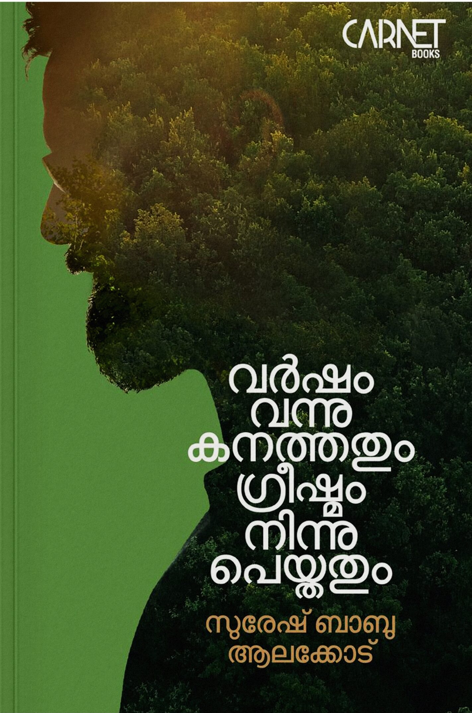

Author: സുരേഷ് ബാബു ആലക്കോട്
Review by: രമേശൻ പി വി
പ്രിയരെ,
വായന ചലഞ്ചിൽ ഒരു പുസ്തകം വായിച്ചു തീർത്തു. ശ്രീ. സുരേഷ് ബാബു ആലക്കോടിന്റെ 'വർഷം വന്നു കനത്തതും ഗ്രീഷ്മം നിന്നു പെയ്തതും'. എന്നാൽ ഒരു ചലഞ്ചായിത്തീർന്നില്ല ഈ പുസ്തകം എന്ന് ആദ്യമേ പറയട്ടെ. ആത്മാംശമുള്ളതും ഏറെക്കുറെ സത്യസന്ധവുമായ അതിലെ ശൈലി ഹൃദ്യമാണ്.
ആരാധ്യനായ കവി വി.മധുസൂദനൻ നായരുടെ കവിതാശകലം ആമുഖമായി ക്കൊടുത്തതും ഉള്ളടക്കവും തമ്മിൽ അഭേദ്യമായ ബന്ധമുണ്ട്. വരരുചിപ്പഴമയിലേക്ക് കവി യാത്ര നടത്തിയതു പോലെ സുരേഷ് മാഷ് നാട്ടക്കൽ ഗ്രാമത്തിൽ തുടങ്ങുന്ന, തന്റെ വേരുകളിലൂടെ നടത്തുന്ന യാത്രയാണ് ഈ പുസ്തകം.
"ഓരോ മനുഷ്യനും ഒരു ഇതിഹാസമാണ്" - എന്നു പറയാറുണ്ട്. അങ്ങനെയെങ്കിൽ നിരവധി ഇതിഹാസങ്ങൾക്കൊപ്പം സഞ്ചരിച്ചും ജീവിച്ചും അവരിൽത്തന്നെ സൂക്ഷ്മനിരീക്ഷണം നടത്തിയും വിശകലനം ചെയ്തും രൂപപ്പെടുത്തിയതാണ് ഇതിലെ ഓരോ കുറിപ്പും എന്ന് ഓരോ അധ്യായവും സ്വയം സാക്ഷ്യപ്പെടുത്തുന്നു.
ഇതിലെ ഓരോ അധ്യായവും ഓരോ ചെറുകഥയുടെ ചട്ടക്കൂടിൽ ഒതുക്കി നിർത്തിയതായാണ് എനിക്കു തോന്നിയത്. ഓരോ അധ്യായവും വേറിട്ട ഓരോ അനുഭവമാണ്. സുഖമായിട്ട് അതങ്ങനെ വായിച്ചു പോകാം. ചെറുകഥയിലെപ്പോലെ ജിജ്ഞാസയുടെ ചരട് പലപ്പോഴും എഴുത്തുകാരൻകൈയ്യിൽ സൂക്ഷിക്കുന്നുണ്ട് ഇതിൽ. ഓരോ അനുഭവവും മുന്നിൽ ഒരു ചിത്രം കാണുന്നതു പോലെ നമുക്ക് അനുഭവപ്പെടും. അത്രയേറെ ലളിതവും സുന്ദരവുമാണ് ഓരോ വിവരണവും.
സുരേഷ് ബാബു എന്ന എഴുത്തുകാരന്റെ ഹൃദയത്തിൽ തൊടാത്തതൊന്നും ഈ കൃതിയിലില്ല. അതുകൊണ്ടു തന്നെയാണ് ഇതിലെ ഓരോന്നും ഹൃദയാവർജകമാക്കുന്നതും.
തന്റെ 'നിള' യോർമകളെ അടുക്കി വെക്കുന്ന സന്ദർഭത്തിൽ അദ്ദേഹം കുഞ്ഞിക്ക എന്ന മനുഷ്യനെ ഓർമിക്കുകയാണ് ആദ്യ അധ്യായത്തിൽ. ബാപ്പയും ഉമ്മയും ഭാര്യയും അഞ്ചു മക്കളുമടങ്ങുന്ന കുടുംബം പുലർത്താൻ വേണ്ടി മാത്രം കഠിനാധ്വാനം ചെയ്യുന്ന കുഞ്ഞിക്ക.
ഉള്ളതു കൊണ്ടു തൃപ്തിപ്പെടുകയും സന്തോഷിക്കുകയും ചെയ്യുന്ന കുഞ്ഞിക്കയെ എഴുത്തുകാരൻ അവതരിപ്പിക്കുമ്പോൾ ജീവിതത്തിൽ നമുക്കു മുമ്പിലൂടെ കടന്നുപോയ പലരെയും നാം ഓർമിക്കും.
ഓരോ രംഗവും വർണനയിൽ ചാലിച്ചാണ് ഈ കൃതി പൂർത്തീകരിച്ചിട്ടുള്ളത്. ഇതു വായിക്കുമ്പോൾ വർണനകളുടെ രാജകുമാരൻ പി.കുഞ്ഞിരാമൻ നായരെ ഓർമ വരാം. എം.ടിയെയോ എസ്.കെ.പൊറ്റെക്കാടിനെയോ ഓർമ വരാം.
അധ്യായങ്ങളിലെ വിശേഷങ്ങളെ കൂടുതൽ പറയുന്നില്ല. നിങ്ങൾ തന്നെ നേരിട്ട് അറിയൂ, അനുഭവിക്കൂ.
ഒരു കഥാകാരന്റെ അവതരണ മികവും കവിത പോലെ മനോഹരമായ വർണനകളും ഓരോ വായനക്കാരനെയും ഈ കൃതിയിലേക്ക് കൂടുതൽ ആകർഷിക്കും.
ഒരാൾ കടന്നുപോയ കാലത്തിന്റെ ഗ്രാമ വിശുദ്ധിയും വറുതിയും വിഹ്വലതകളും ഈ പുസ്തകം പ്രസരിപ്പിക്കുന്നു.
നന്ദി, സ്റ്റേഹം.😍